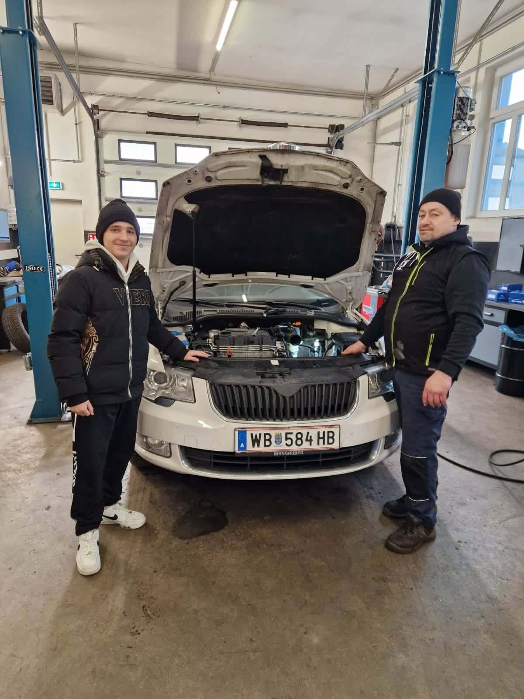
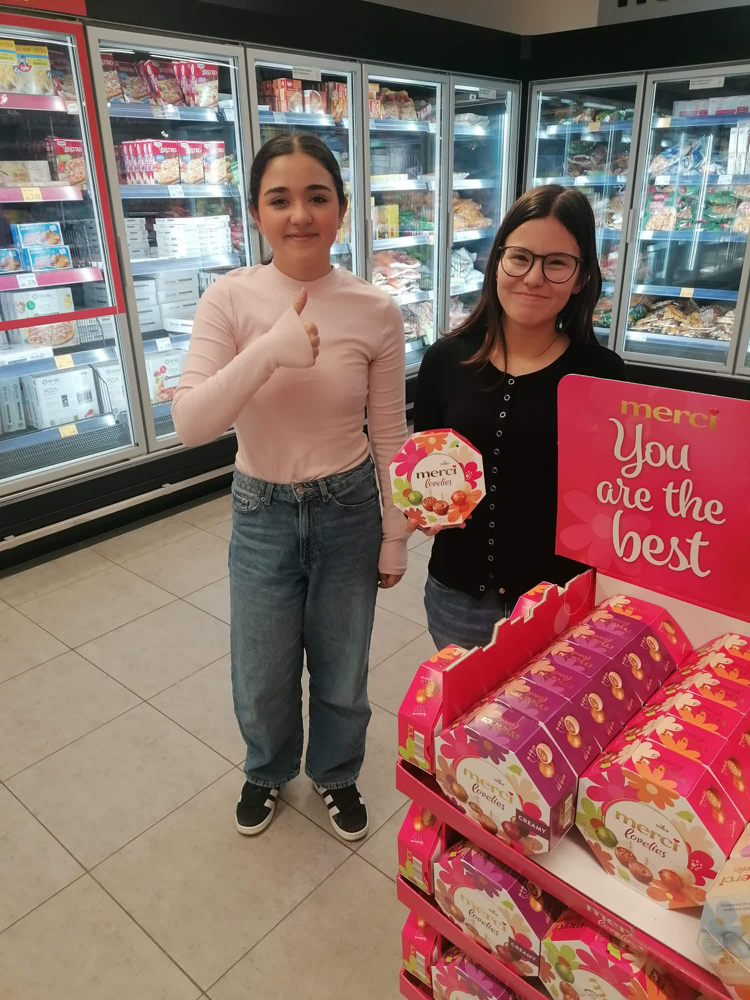
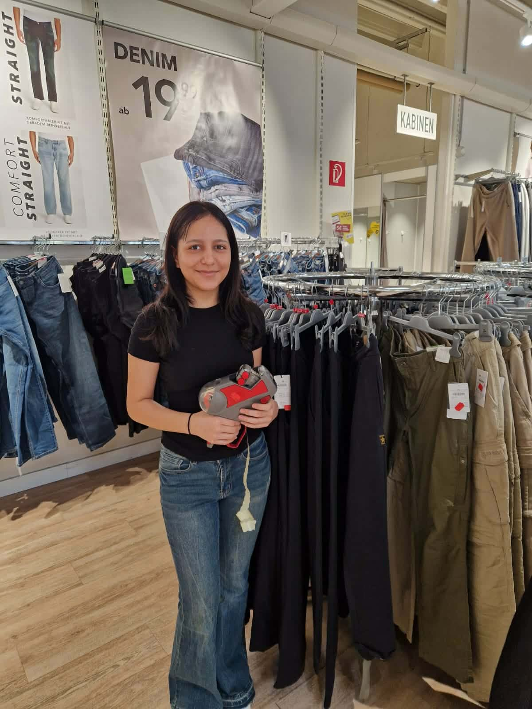
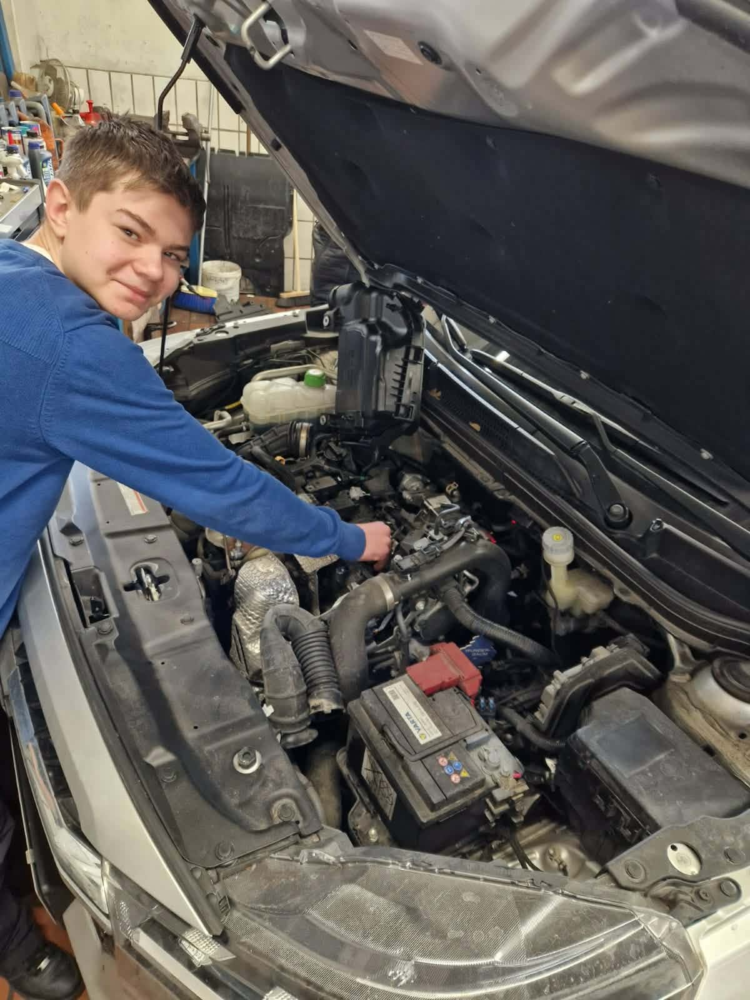
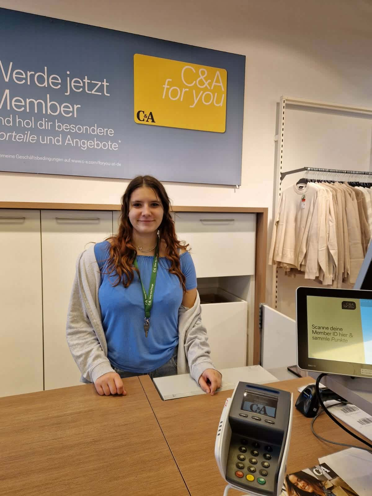

Zwei Tage in der Wunschfirma, ganz ohne Schulbuch: Unsere Viertklässlerinnen und Viertklässler tauchten bei den Berufspraktischen Tagen hautnah in ihr angestrebtes Berufsfeld ein.
Einmal im Jahr haben die Schülerinnen und Schüler der 4. Klassen die Möglichkeit, den Schulalltag hinter sich zu lassen und zwei volle Tage in einem Betrieb ihrer Wahl zu verbringen. Diese sogenannten Berufspraktischen Tage sind fester Bestandteil des Berufsorientierungsschwerpunkts der MS Hirtenberg und sollen den Jugendlichen helfen, eine fundierte Entscheidung für ihre weitere Ausbildung zu treffen.
Jede Schülerin und jeder Schüler hat sich eigenständig einen Betrieb ausgesucht, der zum persönlichen Berufswunsch passt. Von Handel über Kfz-Technik bis hin zu Logistik und Lebensmitteleinzelhandel war die Bandbreite dieses Jahr besonders vielfältig — ein Spiegelbild der unterschiedlichen Talente und Interessen unserer Klassen.
Im Handel: Kassa, Kleidung und Kundenkontakt
Gleich zwei Schülerinnen entschieden sich für den Einzelhandel und verbrachten ihre Praktikumstage bei C&A. Eine von ihnen übernahm Aufgaben an der Kasse — von der Begrüßung der Kundinnen und Kunden über die Bedienung des Kassensystems bis hin zur Mitglieder-Anmeldung für die C&A-Kundenkarte. Die andere war auf der Fläche eingesetzt und lernte, wie Ware ausgezeichnet, sortiert und präsentiert wird.
Beide berichteten übereinstimmend: Der Umgang mit Menschen war das Schönste — aber auch das Anspruchsvollste. Freundlichkeit, Geduld und ein gutes Gedächtnis für Produktstandorte sind im Einzelhandel gefragt.


In der Werkstatt: Motoren, Technik und echte Arbeit
Die Kfz-Werkstatt war für technikbegeisterte Schüler die erste Wahl. Unter Anleitung erfahrener Mechaniker durften sie direkt am offenen Motorraum mitarbeiten — Leitungen prüfen, Teile benennen, Werkzeug reichen und beobachten, wie Diagnosen gestellt werden. Was in der Theorie trocken klingt, wird in der Werkstatt plötzlich zum lebendigen Erlebnis.
Besonders beeindruckend: Der Umgang mit modernen Diagnosegeräten und die Präzision, mit der die Mechanikerinnen und Mechaniker arbeiten. Die Schüler kamen mit dem Wunsch zurück, bald eine Kfz-Technik-Lehre zu beginnen — und mit ordentlich Motoröl an den Händen.


Im Lebensmittelhandel und in der Logistik
Auch der Lebensmitteleinzelhandel stand auf dem Programm: Zwei Schülerinnen probierten sich in einem Supermarkt aus und lernten, wie Waren eingeräumt, Aktionen aufgebaut und Kundinnen und Kunden beraten werden. Was von außen simpel wirkt, verbirgt dahinter ein komplexes System aus Lieferplänen, Kühlketten und Hygienevorschriften.
Für einen weiteren Schüler ging es besonders groß raus: Er verbrachte seine Praktikumstage in einem Nutzfahrzeug-Betrieb und stand am Ende stolz neben einem imposanten Scania 500R. Logistik, Fahrzeugtechnik und der Werkstattalltag rund um schwere LKW — ein Einblick, der Eindruck hinterlässt.


Was bleibt nach zwei Tagen Praxis?
Die Berufspraktischen Tage sind mehr als ein schulischer Ausflug — sie sind ein Schlüsselmoment in der Berufsfindungsphase. Wer zwei Tage lang wirklich im Betrieb mitgearbeitet hat, weiß danach besser, ob ein Beruf zu den eigenen Stärken und Interessen passt. Manche Schülerinnen und Schüler kehren bestätigt zurück — andere entscheiden sich nach dem Schnuppern bewusst für eine neue Richtung. Beides ist wertvoll.
„Mit großem Engagement und viel Freude sammelten die Jugendlichen wertvolle Erfahrungen in der Berufswelt — Erfahrungen, die kein Schulbuch ersetzen kann."
Wir bedanken uns herzlich bei allen teilnehmenden Betrieben für die Zeit, Geduld und Offenheit, mit der sie unsere Schülerinnen und Schüler empfangen und begleitet haben. Und wir gratulieren unseren Jugendlichen — ihr habt gezeigt, dass ihr bereit seid für den nächsten Schritt!